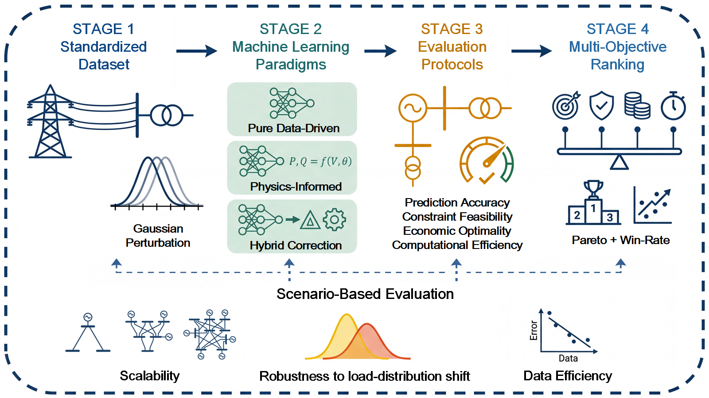
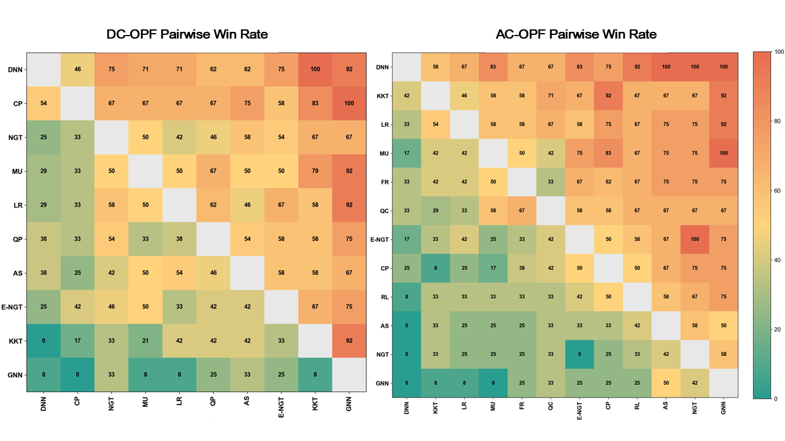
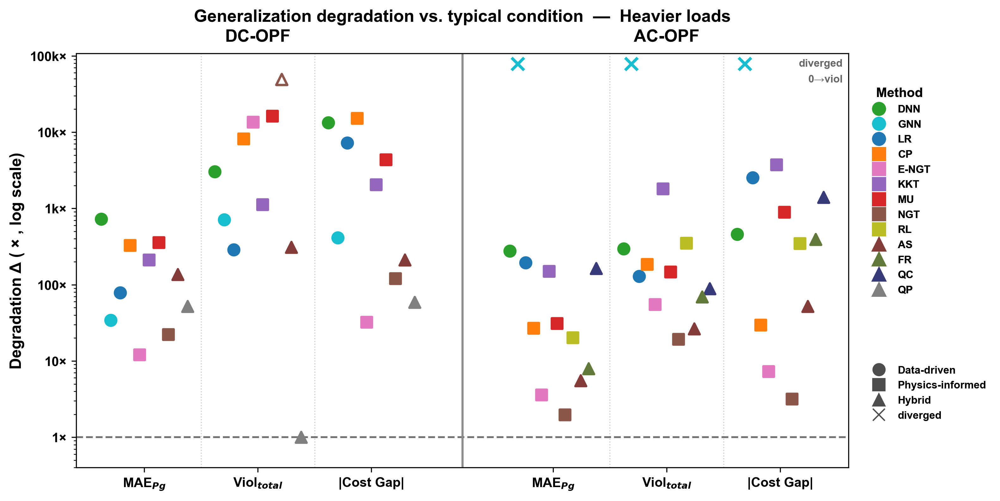
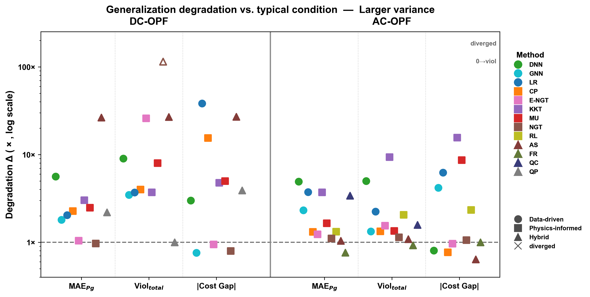
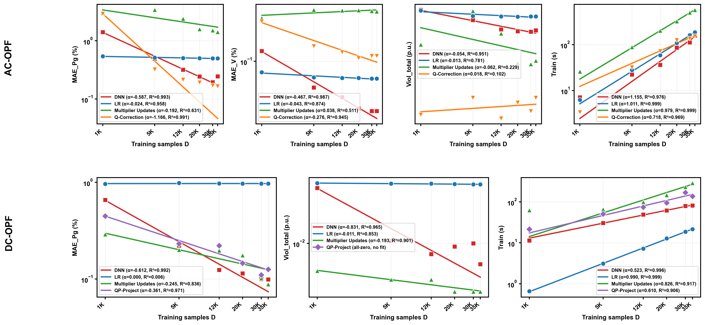

Machine Learning (ML) offers fast inference for solving Optimal Power Flow (OPF), yet inconsistent test cases, implementations, and evaluation metrics across existing studies make it difficult to determine which methods are best suited for real-world deployment. We propose ML-OPF-Bench, a unified benchmark for both AC- and DC-OPF that evaluates representative ML algorithms under a consistent pipeline, ranks them with a multi-objective framework, and stress-tests them on scenarios probing scalability, robustness, and data efficiency. We find that accurate setpoint prediction does not imply operational feasibility, and that this gap widens under stress, where the top-ranked methods become among the least robust under heavy loading, with errors and violations rising by up to four orders of magnitude. Data scaling reveals that prediction error and constraint violations follow divergent trajectories. These results expose critical trade-offs between speed, accuracy, and feasibility and offer practical guidance for future ML-OPF design.

Structural overview of ML-OPF-Bench. Spanning standardized data generation, the benchmarked learning paradigms, unified evaluation, multi-objective ranking, and scenario-based stress tests.
| Paradigm | Method | Loss Function | Constraint Handling |
|---|---|---|---|
| Pure Data-Driven | Linear Regression | MSE | None, linear approximation |
| Deep Neural Network | MSE | None, end-to-end learning | |
| Graph Neural Network | MSE | None, topology-aware end-to-end learning | |
| Physics-Informed | Constraint Penalties | MSE + violation penalties | Soft penalty terms in loss |
| Multiplier Updates | MSE + Lagrangian dual | Iterative Lagrangian dual scheme | |
| KKT Embedded | Primal + dual + KKT residuals | KKT conditions as differentiable layers | |
| NGT/E-NGT | Cost + violation penalties | No ground truth / supervised pre-training | |
| Reinforcement Learning | Reward (cost + violation) | Soft penalty in reward; no ground truth | |
| Hybrid | QP Project (DC) | MSE + violation penalties | Convex QP projection via PTDF |
| Q Correction (AC) | MSE | Reactive power clip and power flow re-solve | |
| Feasibility Recovery (AC) | MSE + violation penalties | Feasibility check with warm-start recovery | |
| Active Set (AS) | Cross-Entropy | Constraints classification with LP recovery |
| Rank | Method | 30-bus | 118-bus | 300-bus | Mean | Marginal (%) |
|---|---|---|---|---|---|---|
| 1 | DNN | 1 | 1 | 1 | 1.0 | 72.7 |
| 2 | CP | 1 | 1 | 1 | 1.0 | 70.8 |
| 3 | NGT | 2 | 1 | 1 | 1.3 | 49.1 |
| 4 | MU | 3 | 1 | 1 | 1.7 | 55.6 |
| 5 | LR | 2 | 2 | 1 | 1.7 | 55.1 |
| 6 | QP | 3 | 1 | 1 | 1.7 | 49.1 |
| 7 | AS | 1 | 2 | 2 | 1.7 | 48.6 |
| 8 | E-NGT | 3 | 1 | 1 | 1.7 | 46.8 |
| 9 | KKT | 4 | 2 | 2 | 2.7 | 35.6 |
| 10 | GNN | 5 | 3 | 2 | 3.3 | 16.7 |
| Rank | Method | 30-bus | 118-bus | 300-bus | Mean | Marginal (%) |
|---|---|---|---|---|---|---|
| 1 | DNN | 1 | 1 | 1 | 1.0 | 81.1 |
| 2 | KKT | 1 | 1 | 1 | 1.0 | 65.9 |
| 3 | LR | 1 | 1 | 1 | 1.0 | 64.8 |
| 4 | MU | 1 | 2 | 1 | 1.3 | 60.6 |
| 5 | FR | 1 | 1 | 2 | 1.3 | 56.4 |
| 6 | QC | 2 | 1 | 1 | 1.3 | 54.9 |
| 7 | E-NGT | 1 | 2 | 1 | 1.3 | 49.2 |
| 8 | CP | 2 | 2 | 1 | 1.7 | 42.8 |
| 9 | RL | 2 | 1 | 2 | 1.7 | 42.4 |
| 10 | AS | 2 | 2 | 2 | 2.0 | 32.6 |
| 11 | NGT | 2 | 3 | 2 | 2.3 | 27.3 |
| 12 | GNN | 3 | 3 | 2 | 2.7 | 22.0 |


Heavier loads
Larger load variance
A model can hit the optimal setpoints almost exactly but still break physical limits. Low prediction error is no guarantee of a feasible dispatch.
The best in-distribution methods are among the least robust under heavy load, with errors and violations rising up to four orders of magnitude. They learn statistical correlations, not power-flow physics.
More data lowers prediction error along a power law with steep diminishing returns, but barely touches constraint violations. Feasibility comes from architecture, not bigger datasets.
@article{ML-OPF-Bench,
title={ML-OPF-Bench: Benchmarking Machine Learning for Optimal Power Flow},
author={Xinyi Liu, Xuan He, Danny H.K. Tsang, and Yize Chen},
journal={Journal},
year={2026},
url={https://xinyiliu04.github.io/ml-opf-bench-webpage/}
}